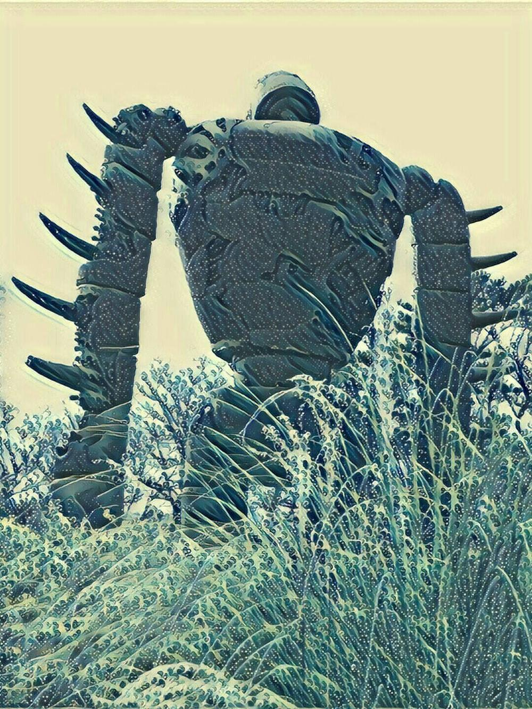

天空之城
2017-10-22

大家好，我是老闆「那個誰」，人生苦短，不如聽個「故事」解解悶？
1986年吉卜力公司推出了《天空之城》（天空の城ラピュタ），從此我們那個世代的孩子看到天空大一點的積雨雲，「拉普達」就會脫口而出，好似大家都有著指向的飛行石，發出光束標記著各人不同的空中城堡，那個只有童年方可到達的花鳥樂園。
大一點，我們的秘密基地減去了基地，只剩秘密。
曾經的孩子被遺留在基地中，等待救援。
每個地點都藏著一個又一個的秘密，關著一段又一段的回憶，人生光景數十載，那裡失戀喝酒、這裡打架鬧事、某個轉角有人因失敗而痛哭、繁華的城市裝填著力量與空虛，現實世界在你我慢慢長大的過程中，成了一輛普通電車，必須看遍每一站的風光，每一處的悲喜，方才悠悠到達每個人的終點站。
但總有一站，你願意停駐多一秒，甚至錯過火車也無妨，就貪戀那一抹你從未見過的青山；那一片無盡的大海；那一個擦身將過的女孩/男孩，即使錯過下一站的功成名就也義無反顧，甘願多看一眼。
是阿，多看那一眼粉身碎骨又如何？
「巴魯斯」（バルス）
不只讓天空之城歸于無盡的蒼穹，不再復返，也如火車催逼上車的鈴聲，提醒你回到車廂，一站站的愛恨情仇，都將進入最終的隧道而被黑暗淘洗吞沒。
不過別怕，故事柑仔店在每一站的轉角都可以找到，上車前來聽個故事吧。
--無論你是誰，給我你的故事，我告訴你不知道的故事--